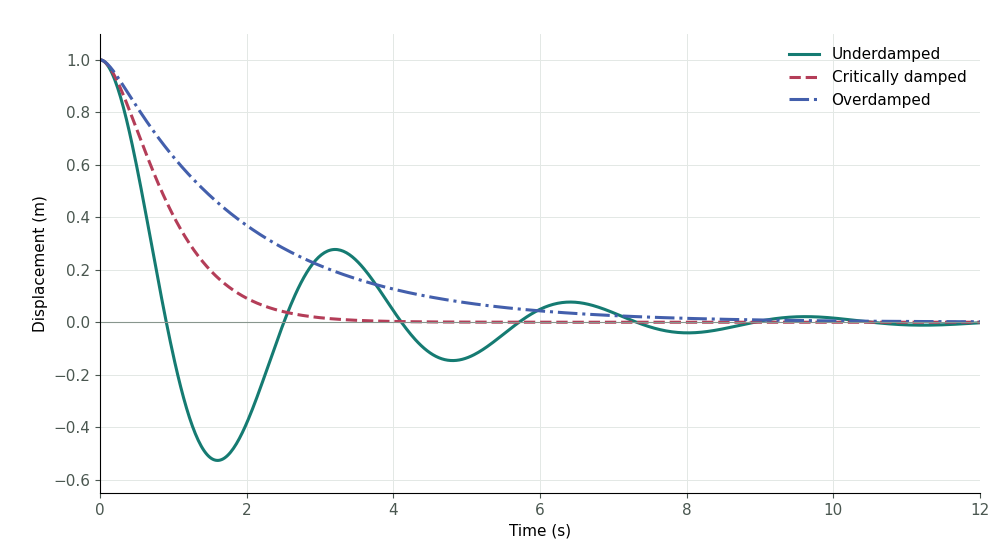

Computational example Julia
Damped Harmonic Motion
One mass, one spring, three ways to return to equilibrium.
m x″ + c x′ + k x = 0
m = 1 kg · k = 4 N/m · x(0) = 1 m · v(0) = 0 m/s
The Three Regimes Together
Damping removes mechanical energy. More damping does not always mean a faster return: the overdamped mass takes longer to approach equilibrium than the critically damped mass for this release from rest.

Reproduce the Result
The Julia project contains the calculation, preset inputs, tests, environment manifest, and CSV results.
Download Julia project 471 KBPublished results · Julia 1.10.12 · 601 samples per preset
Method and Assumptions
The state is evaluated as exp(tA)u(0) with Julia's standard-library matrix exponential. The model assumes a linear spring and viscous damping, with no driving force.
Independent analytic solutions check all three regimes. Mechanical energy, E = (m v² + k x²)/2, must decrease or remain constant.
These are saved calculations. Selecting a preset does not run code on the server.
Calculation provenance